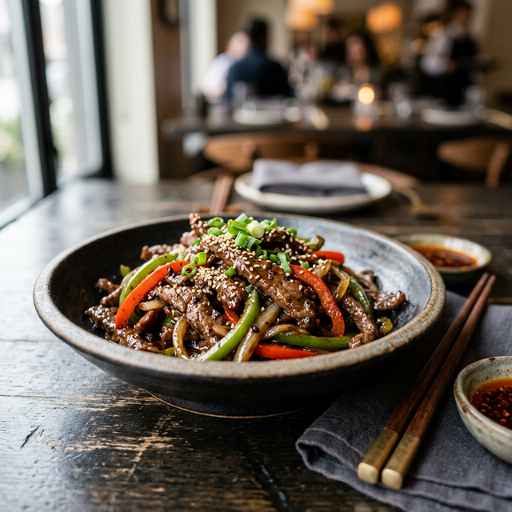

Pepper Beef Stir-fry
A classic Chinese-inspired stir-fry featuring tender beef and crisp bell peppers in a savory black pepper sauce.

Authentic Stir-fry Technique
Pepper Beef is a staple of Cantonese cuisine, relying on the "wok hei" (breath of the wok) and the technique of velveting meat. By marinating the beef with cornstarch and a touch of baking soda, we create a protective layer that keeps the meat incredibly tender even under intense heat. The contrast between the succulent beef and the crisp, vibrant peppers defines this dish.
Ingredients
Serves: 2 | Time: ~25 min
Base Ingredients
- 225g Flank steak (or skirt, flat iron, hanger steak)
- ½ large Red bell pepper, diced
- ½ large Green bell pepper, diced
- ½ medium Onion, julienned
- 15ml Vegetable oil (or any neutral oil)
Marinade
- 4 cloves Garlic, minced
- 10ml Regular soy sauce
- 10ml Dark soy sauce
- 10ml Shaoxing wine (or dry sherry/white wine/broth)
- 7g Cornstarch
- 2g Black pepper
- 2g White granulated sugar (or brown sugar)
- 1g Baking soda
- 15ml Vegetable oil
Sauce
- 15ml Oyster sauce
- 15ml Dark soy sauce
- 15ml Regular soy sauce
- 2g Black pepper
- 5ml Shaoxing wine
- 15g Cornstarch
- 120ml Chicken or beef stock (low-sodium)
Method
1. Prepare & Marinate
Slice the beef against the grain at a 45-degree angle into 6mm thick pieces. Pro Tip: To thinly slice beef easily, freeze it for 45-60 minutes fully exposed; once the exterior is hardened, it becomes much easier to slice cleanly. Marinate the sliced beef with the marinade ingredients for 15 minutes.
2. Sear the Beef
Heat 15ml of vegetable oil in a large pan or wok over medium-high heat. Fry the beef until cooked and slightly browned on the edges (about 2 minutes). Remove the beef and set aside.
3. Stir-fry Vegetables
In the same pan, fry the onions and bell peppers until they are crisp yet slightly tender (about 30 seconds). Be careful not to overcook them to maintain their vibrant color and crunch.
4. Thicken & Combine
Stir the prepared sauce mixture and add it to the pan. Simmer until the sauce thickens (about 1 minute). Return the cooked beef to the pan and toss everything together to coat evenly. Serve immediately over steamed rice.
Key Ratios & Tips
The Secret to Tenderness
The velveting process is crucial. The combination of cornstarch and baking soda breaks down the muscle fibers while locking in moisture. If the sauce is too thick, add a splash of stock. If it's too thin, let it simmer for an extra 30 seconds before adding the beef back in.